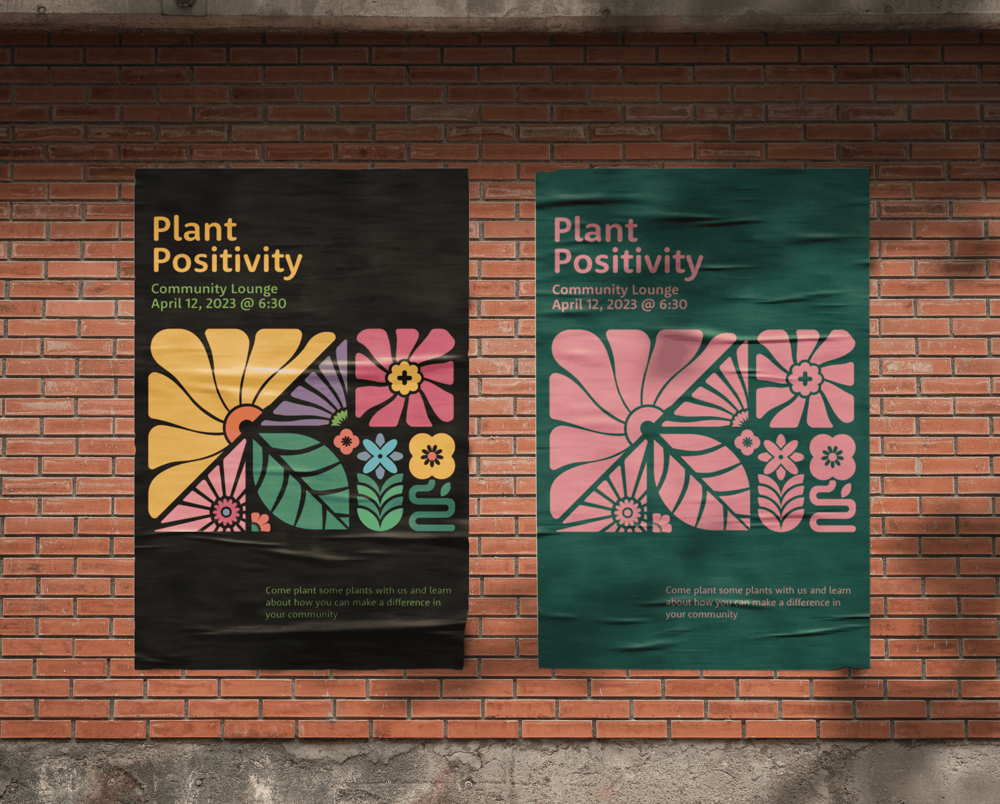
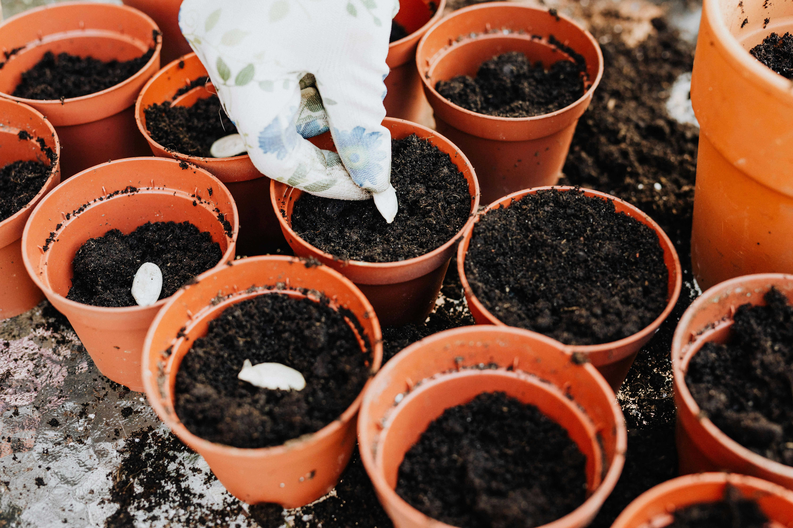

Plant Positivity
A community event poster series designed, illustrated, and hosted for residents of Western Washington University's dorms.
Plant Positivity started as a pencil sketch during a slow afternoon — a loose flower doodle that kept getting more detailed until it felt like something worth printing. The event itself grew from the same impulse: a chance to bring residents together for an afternoon of flower pot painting, seed planting, and positive affirmations. Design and community in the same afternoon.

Residents were invited to drop in, fill out a positive affirmation sheet, paint a flower pot, plant some seeds, and hang out with their neighbors. The goal was simple — create a low-pressure environment where people could be creative, connect with each other, and leave with something living to take care of. The poster design needed to communicate that warmth instantly.

